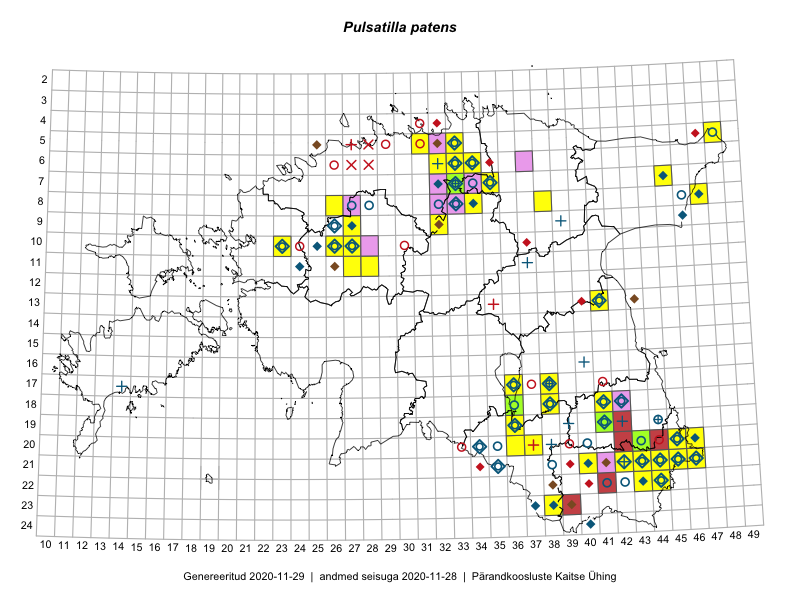

Pulsatilla patens
Uuendatud: 2016-12-07
Kaardile koondatud taksonid: Pulsatilla patens (L.) Mill.

Kaart põhineb 66 kirjel, neist vaatlusi 64 ja eksemplare 2. Taksonit on leitud 26 ruudust.
| Ruut | Vaatleja(d) | Vaatlusaeg | Kirje tüüp | Viide andmebaasikirjele |
|---|---|---|---|---|
| 20-45 | Rein Kalamees, Kersti Püssa | 2015-07-15 | punkt | vaata PlutoFis |
| 21-45 | Rein Kalamees, Kersti Püssa | 2015-05-28 | ruut/ala | vaata PlutoFis |
| 21-46 | Rein Kalamees, Kersti Püssa | 2015-05-28 | ruut/ala | vaata PlutoFis |
| 06-32 | Rein Kalamees, Kersti Püssa | 2015-06-07 | punkt | vaata PlutoFis |
| 06-32 | Rein Kalamees, Kersti Püssa | 2015-06-07 | ruut/ala | vaata PlutoFis |
| 06-34 | Rein Kalamees, Kersti Püssa | 2015-09-11 | ruut/ala | vaata PlutoFis |
| 20-45 | Rein Kalamees, Kersti Püssa | 2015-07-16 | ruut/ala | vaata PlutoFis |
| 05-33 | Rein Kalamees, Kersti Püssa | 2016-09-12 | punkt | vaata PlutoFis |
| 05-33 | Rein Kalamees, Kersti Püssa | 2015-09-12 | ruut/ala | vaata PlutoFis |
| 08-47 | Meeli Mesipuu, Timo Luhamäe | 2015-07-21 | ruut/ala | vaata PlutoFis |
| 07-33 | Jana-Maria Habicht, Ester Valdvee | 2015-05-01 | ruut/ala | vaata PlutoFis |
| 08-34 | Jana-Maria Habicht, Ester Valdvee | 2015-06-28 | ruut/ala | vaata PlutoFis |
| 07-33 | Jana-Maria Habicht, Ester Valdvee | 2015-05-01 | punkt | vaata PlutoFis |
| 07-33 | Jana-Maria Habicht, Ester Valdvee | 2015-05-01 | punkt | vaata PlutoFis |
| 10-27 | Toomas Kukk | 2014-06-10 | punkt | vaata PlutoFis |
| 10-27 | Toomas Kukk | 2014-06-10 | punkt | vaata PlutoFis |
| 09-32 | Ott Luuk, Toivo Sepp | 2015-05-14 | ruut/ala | vaata PlutoFis |
| 08-34 | Jana-Maria Habicht, Ester Valdvee | 2015-06-28 | punkt | vaata PlutoFis |
| 13-41 | Ulvi Selgis | 2015-04-11 | punkt | vaata PlutoFis |
| 08-47 | Timo Luhamäe, Meeli Mesipuu | 2015-07-21 | punkt | vaata PlutoFis |
| 16-13 | Sirje Azarov, Aira Alasi | 2015-07-28 | ruut/ala | vaata PlutoFis |
| 10-26 | Aat Sarv | 2015-07-22 | ruut/ala | vaata PlutoFis |
| 18-36 | Helle Mäemets, Mare Leis | 2015-06-24 | ruut/ala | vaata PlutoFis |
| 17-36 | Helle Mäemets, Mare Leis | 2015-06-25 | ruut/ala | vaata PlutoFis |
| 09-32 | Ott Luuk, Toivo Sepp | 2015-05-14 | punkt | vaata PlutoFis |
| 17-36 | Helle Mäemets | 2015-05-23 | punkt | vaata PlutoFis |
| 17-36 | Helle Mäemets | 2015-05-01 | punkt | vaata PlutoFis |
| 10-27 | Peedu Saar, Ott Luuk, Meeli Mesipuu, Thea Kull, Kersti Püssa, Rein Kalamees, Toomas Kukk | 2014-06-10 | ruut/ala | vaata PlutoFis |
| 10-27 | Peedu Saar, Ott Luuk, Meeli Mesipuu, Thea Kull, Kersti Püssa, Rein Kalamees, Toomas Kukk | 2014-06-10 | punkt | vaata PlutoFis |
| 18-36 | Helle Mäemets | 2015-04-30 | punkt | vaata PlutoFis |
| 18-36 | Helle Mäemets, Malle Timm | 2015-04-30 | punkt | vaata PlutoFis |
| 18-36 | Helle Mäemets | 2016-04-17 | punkt | vaata PlutoFis |
| 11-27 | Aat Sarv | 2015-05-26 | ruut/ala | vaata PlutoFis |
| 09-27 | Aat Sarv | 2015-05-15 | ruut/ala | vaata PlutoFis |
| 10-27 | Aat Sarv | 2015-05-15 | ruut/ala | vaata PlutoFis |
| 08-47 | Eerik Leibak | 2016-05-12 | ruut/ala | vaata PlutoFis |
| 08-47 | Eerik Leibak | 2016-05-12 | punkt | vaata PlutoFis |
| 08-47 | Eerik Leibak | 2016-05-12 | punkt | vaata PlutoFis |
| 08-47 | Eerik Leibak | 2016-05-12 | punkt | vaata PlutoFis |
| 10-23 | Sirje Lagle, Tõnu Ploompuu | 2015-05-15 | ruut/ala | vaata PlutoFis |
| 20-46 | Meeli Mesipuu, Timo Luhamäe | 2016-06-14 | punkt | vaata PlutoFis |
| 20-46 | Meeli Mesipuu, Timo Luhamäe | 2016-06-14 | punkt | vaata PlutoFis |
| 20-45 | Meeli Mesipuu, Timo Luhamäe | 2016-06-14 | punkt | vaata PlutoFis |
| 21-44 | Toomas Kukk, Tiit Hallikma, Johannes Kõdar | 2016-06-14 | ruut/ala | vaata PlutoFis |
| 22-43 | Toomas Kukk, Tiit Hallikma, Johannes Kõdar | 2016-06-15 | ruut/ala | vaata PlutoFis |
| 19-36 | Peedu Saar, Tarmo Niitla | 2016-06-14 | ruut/ala | vaata PlutoFis |
| 21-46 | Meeli Mesipuu, Timo Luhamäe | 2016-06-14 | punkt | vaata PlutoFis |
| 21-43 | Thea Kull, Peedu Saar | 2016-08-05 | ruut/ala | vaata PlutoFis |
| 22-43 | Thea Kull, Peedu Saar | 2016-08-04 | punkt | vaata PlutoFis |
| 19-36 | Tarmo Niitla, Peedu Saar | 2016-06-14 | punkt | vaata PlutoFis |
| 21-43 | Peedu Saar, Thea Kull | 2016-08-05 | punkt | vaata PlutoFis |
| 22-43 | Peedu Saar, Thea Kull | 2016-08-04 | ruut/ala | vaata PlutoFis |
| 20-46 | Timo Luhamäe, Meeli Mesipuu | 2016-06-14 | ruut/ala | vaata PlutoFis |
| 21-46 | Timo Luhamäe, Meeli Mesipuu | 2016-06-14 | ruut/ala | vaata PlutoFis |
| 10-26 | Sirje Azarov, Meeli Mesipuu | 2016-07-06 | punkt | vaata PlutoFis |
| 10-26 | Sirje Azarov, Meeli Mesipuu | 2016-07-06 | punkt | vaata PlutoFis |
| 10-26 | Sirje Azarov, Meeli Mesipuu | 2016-07-06 | punkt | vaata PlutoFis |
| 10-26 | Sirje Azarov, Meeli Mesipuu | 2016-07-06 | punkt | vaata PlutoFis |
| 10-26 | Sirje Azarov, Meeli Mesipuu | 2016-07-06 | punkt | vaata PlutoFis |
| 08-20 | Tiit Hallikma, Tõnu Ploompuu | 2016-07-07 | ruut/ala | vaata PlutoFis |
| 21-44 | Tiit Hallikma, Toomas Kukk, Johannes Kõdar | 2016-06-14 | punkt | vaata PlutoFis |
| 21-44 | Tiit Hallikma, Toomas Kukk, Johannes Kõdar | 2016-06-14 | punkt | vaata PlutoFis |
| 10-26 | Meeli Mesipuu, Sirje Azarov | 2016-07-06 | ruut/ala | vaata PlutoFis |
| 18-38 | Mall Värva | 2016-05-10 | punkt | vaata PlutoFis |
| 07-33 | Jana-Maria Habicht | 2015-05-01 | eksemplar | vaata PlutoFis |
| 07-33 | Jana-Maria Habicht | 2015-05-01 | eksemplar | vaata PlutoFis |